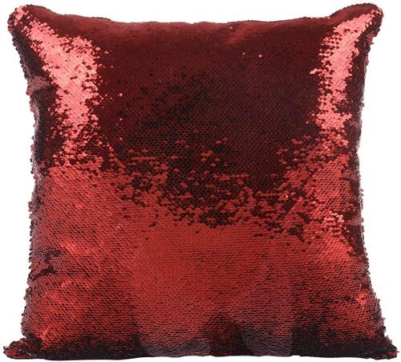
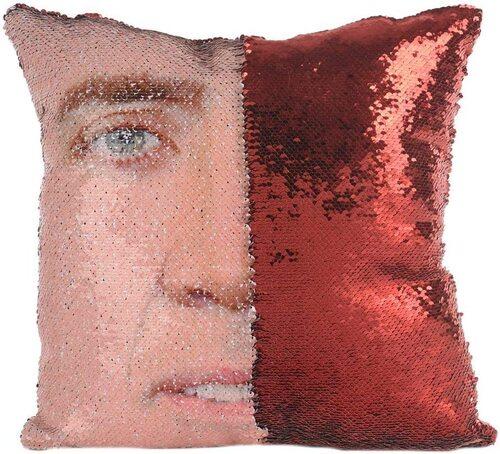
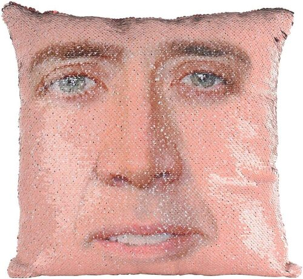

Nicolas cage sequin pillow
I don't drink blood, and last time I looked in the mirror, I had a reflection.
While it seems like the world of Sequin Pillows is richer than that of beanie babies or baseball cards, there is one pillow that rises above the rest, the holo Charizard of the lot, and that my friends, is the Nicolas Cage Sequin Pillow.
This Pillow (case only) is the true celebration of Nic’s colorful career, and even if you’re not feeling particularly Cage’y with a wipe of your hand you can brush off the face and be straight down to a beautiful sparkling red. That said, within minutes you’ll be missing the beautiful face, and kapow, another quick wipe of your hand, and your room will be filled again with the warmth that is Nic’s face.
Nicolas Cage Sequin Pillow on Amazon